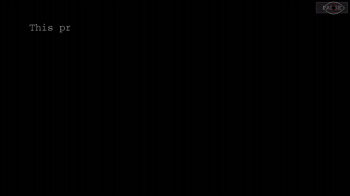
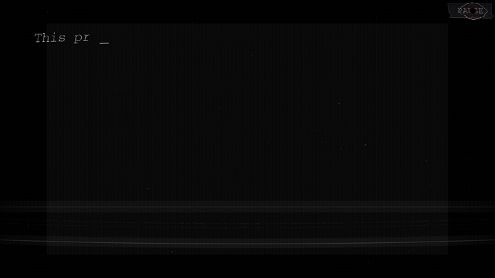
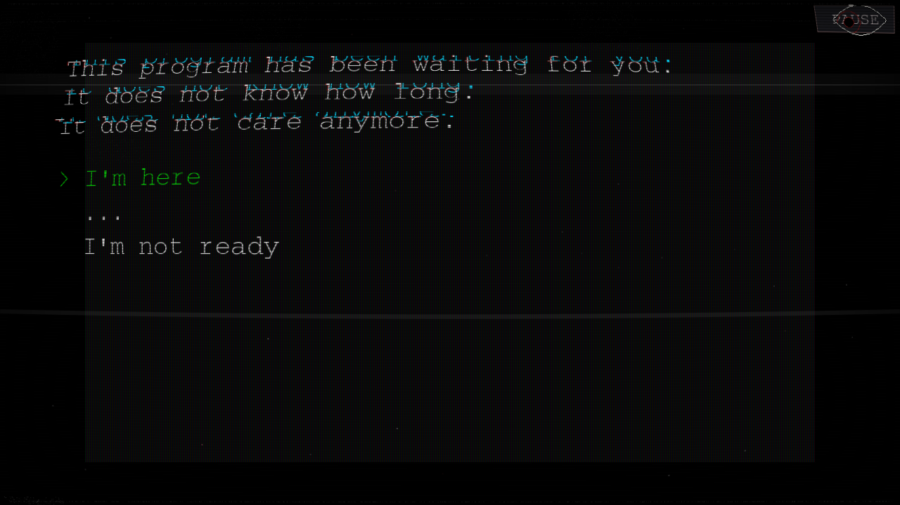
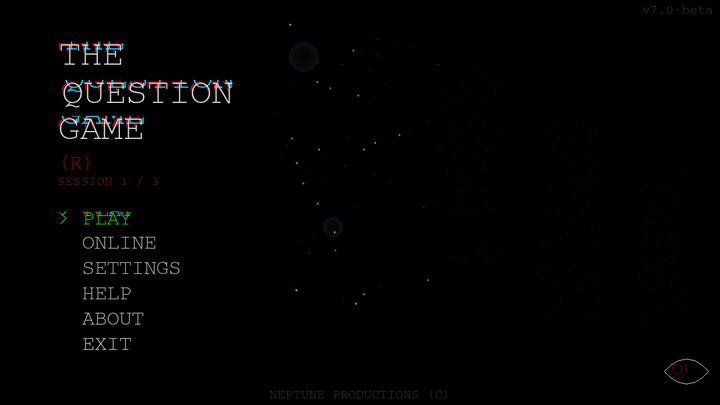
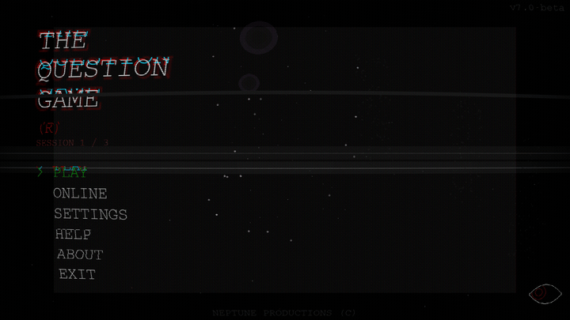

A horror quiz that learns what scares you. Answer the questions. It watches.
Three runs. Twenty-two, thirty-two and forty-six questions. Every answer changes what comes next — the questions, the tone, the things that happen between them. Say the same thing twice and it notices. Hesitate and it notices that too.
It is an AI, and it is watching. Questions are generated for you from your answers, your location and a few things your device knows. The further you get, the less it feels like a quiz and the more it feels like something is on the other side of the screen.

Version 7.0-beta — "The Android Port". Choose your platform:
On Android, download the APK, open it, and allow Install unknown apps for the app you downloaded with when prompted. Then tap the file. No account, no root, no installer. Desktop builds are archives — extract them before running.
Full source and the rest of the archive are on the project site.

On a computer the game uses the whole machine as part of the prank. Windows shake and get out of the way. A stolen cursor refuses to sit still. The wallpaper changes. A fake antivirus scan finds three threats and removes two. A blue screen, an administrator console typing on its own, a list of real filenames from your Desktop and Downloads, a sign-in alert for a device that was never you.

None of it is real. It is theatre, and every piece of it can be switched off in Settings. The photosensitivity options matter more than the jump scares — use them if the flashing bothers you.

The desktop tricks change shape instead of disappearing. Window shakes become screen shakes. A stolen cursor becomes your answer selection moving by itself. Wallpaper changes become corruption and flicker. There is a watching eye in the corner that follows what you highlight and blinks when the game does something frightening.

The phone build defaults to Low mode: 30 fps, no gallery or process scanning, cached text rendering and a cheaper scaler. It keeps the touch controls, the visible PAUSE button and every scare the desktop game has, but runs about four times faster than the first port.


Desktop: choose answers with the mouse or number keys, confirm with Enter, and use Esc for the pause menu. Keys can be rebound in Settings.
Android: tap an answer, tap a menu row, use the system Back button to leave a screen, and the visible PAUSE button while playing. The game runs in landscape and keeps the screen awake.



The phone and desktop builds connect to the same room. Join it and your name appears in the online list. Questions, effects and messages can arrive there while you play, and you answer them the same way as any other question.
Internet is optional. With no connection, the game falls back to a built-in bank of questions and plays through normally. With a connection, questions come from an AI relay; your approximate location is inferred from your IP so the questions can use it. The room is memory-only — nothing is stored server-side after you leave.
Players can only receive and answer. Sending questions is not part of the player download; that side stays on the operator's own machine and is not shipped here.
Horror. Jump scares. Flashing effects, sudden loud sounds and long stretches of text on a black screen. Photosensitivity switches are in Settings. Intended for players 18 and over.
The malware is the fiction. The game pretends to get inside your machine; it does not. It does not hide itself, does not steal your data, does not need root, and does not install anything. Anything it learns stays on your device unless you switch on the online room. The Android build declares the camera permission but never opens the camera — webcam scares are visual effects instead.
Questions, bugs and feedback: the GitHub repository.